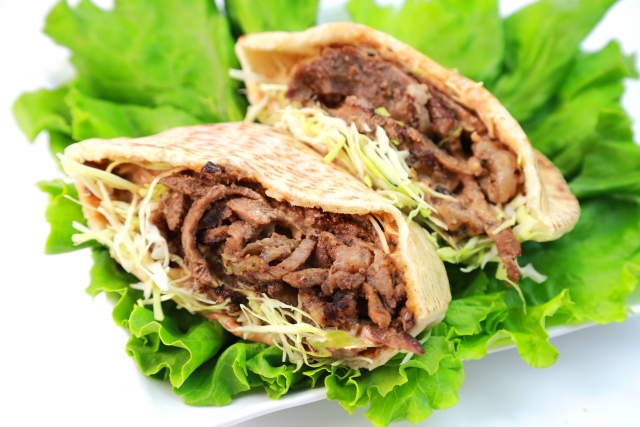

ケバブは、中東地域が発祥の肉料理で、一般的には羊肉や鶏肉をスパイスに漬け込み、串に刺して焼いたものです。
回転させながら焼く大きな塊肉を削ぎ落とす「ドネルケバブ」が特に有名で、パンに挟んだりご飯と共に提供されたりします。世界中で親しまれており、地域ごとに様々なバリエーションが存在します。

サバサンドは、焼いたサバと玉ねぎ、レタスなどの野菜をパンに挟んだトルコを代表するストリートフードです。
イスタンブールのエミノニュ地区などでよく見られ、香ばしいサバの旨味と野菜のシャキシャキ感が絶妙なハーモニーを生み出します。手軽に食べられるB級グルメとして、観光客にも人気があります。